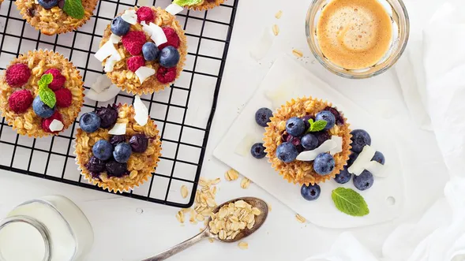

Baked Oatmeal Cups
Back to All Recipes

Image credit: Elena Veselova/Getty Images
Ingredients
- 3 cups old fashioned oats
- 1 1/2 cups unsweetened soy milk or low-fat cow's milk
- 2 large eggs
- 1/4 cup pure maple syrup
- 1/2 cup unsweetened apple sauce
- 1 tsp baking powder
- 1 tsp ground cinnamon
- 1/4 tsp kosher salt
- 2 tbsp chia seeds
- 1 tsp pure vanilla extract
- 1/2 cup chopped walnuts
- 1 1/2 cups fruit of your choice (berries, apple, pear, or other)
- Fresh fruit, nuts, coconut for topping (optional)